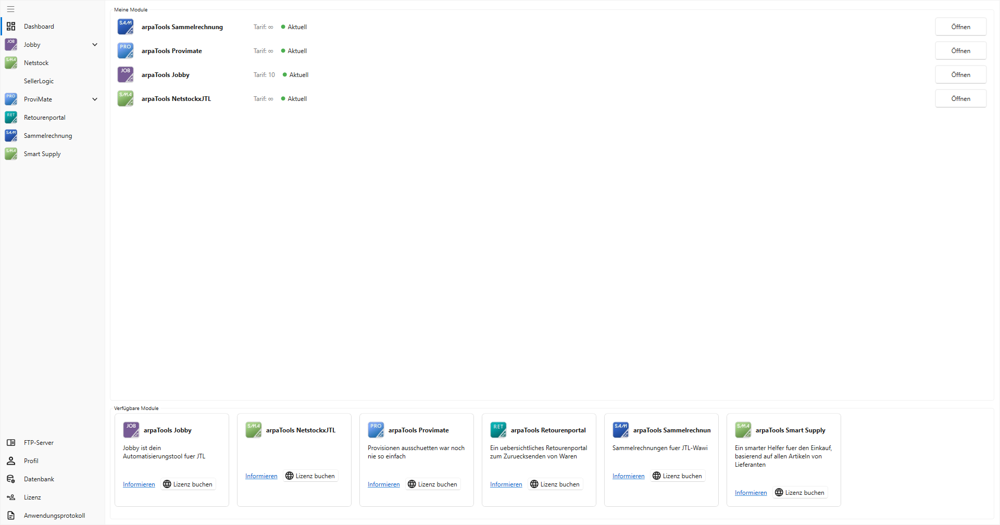

Grundlagen und Einrichtung
ArpaTools Kern
Auf dieser Seite
Einleitung
arpaTools ist eine Windows-Anwendung, die Ihre JTL-Wawi mit externen Diensten und Marktplätzen verbindet. Statt einer einzelnen Anwendung erhalten Sie einen Client, in dem einzelne Apps (Module) einzeln lizenziert und geöffnet werden, zum Beispiel Jobby, Sammelrechnung, ProviMate, Retourenportal, Netstock, SellerLogic oder SmartSupply. Jede App hat ihre eigene Dokumentation; dieser Text beschreibt, was allen gemeinsam ist: Programmstart, Profile, Datenbankverbindung, Lizenz und die Grundeinstellungen.
Erstmaliger Start
Beim ersten Start zeigt arpaTools die Endbenutzer-Lizenzvereinbarung (EULA). Erst wenn Sie die Checkbox Ich akzeptiere die Nutzungsbedingungen setzen und speichern, lässt sich arpaTools nutzen.
Sind auf Ihrem Rechner mehrere Profile eingerichtet, fragt arpaTools beim Start, mit welchem Profil Sie arbeiten möchten. Ein Profil bündelt Datenbankverbindung, Lizenz und alle Einstellungen; mit nur einem Profil entfällt diese Abfrage und arpaTools startet direkt damit.
Startseite
Nach dem Start zeigt arpaTools die Startseite mit zwei Bereichen:
- Meine Module: die für Ihr Profil lizenzierten Apps, mit Tarif und Lizenzstatus (z. B. „Aktuell"). Über den Knopf Öffnen wechseln Sie in die App.
- Verfügbare Module: Apps, die Sie noch nicht lizenziert haben, mit einer kurzen Beschreibung. Informieren und Lizenz buchen öffnen die passende Seite zur App auf arpatools.com in Ihrem Browser.

Links steht die Seitenleiste mit allen lizenzierten Apps; Apps mit mehreren Bereichen (z. B. Jobby, ProviMate) lassen sich dort aufklappen. Unten in der Seitenleiste liegen die app-übergreifenden Einstellungen: FTP-Server, Profil, Datenbank, Lizenz, Einstellungen und Anwendungsprotokoll - dazu die Links Änderungsverlauf und Download.
Profile verwalten
Über Profil in der Seitenleiste öffnen Sie die Profilverwaltung. Sie zeigt alle auf diesem Rechner eingerichteten Profile mit Id und Name.
- Hinzufügen: legt ein neues, leeres Profil an.
- Löschen: entfernt das gewählte Profil unwiderruflich, inklusive seiner Konfiguration.
- Profil wechseln: startet arpaTools neu und meldet es im gewählten Profil an. Ein Wechsel im laufenden Programm ist nicht möglich, deshalb die Bestätigungsfrage und der Neustart. Ein gerade erst angelegtes, aber noch nicht gespeichertes Profil lässt sich nicht direkt anwählen - erst speichern, dann wechseln.
Datenbankverbindung
Über Datenbank in der Seitenleiste hinterlegen Sie die Verbindung zu Ihrer JTL-Wawi-Datenbank: Server, Benutzername, Passwort und die Datenbank selbst. Mit dem Knopf neben dem Datenbankfeld laden Sie die auf dem Server verfügbaren Datenbanken neu, um die richtige aus der Liste zu wählen.
Hinweis für Bildschirmfotos: Dieser Dialog zeigt echte Zugangsdaten. Für eine Doku-Aufnahme vorher mit Beispielwerten befüllen, nicht mit echten.
Lizenz
Über Lizenz in der Seitenleiste hinterlegen Sie die E-Mail-Adresse und den Lizenzschlüssel, mit denen arpaTools Ihre gebuchten Apps beim Lizenzserver prüft. Einzelne Apps zusätzlich buchen können Sie direkt über die Kacheln im Bereich Verfügbare Module auf der Startseite.
Nutzungskennzahlen
Bei jeder Lizenzprüfung übermittelt arpaTools zusätzlich Nutzungskennzahlen aus Ihren Apps: wie viele Jobs, Provisionsregeln oder ähnliche Datensätze angelegt sind, wie oft sie zuletzt genutzt wurden, und welche Einstellungen Sie aktiviert haben. Diese Zahlen zeigen uns, welche Funktionen tatsächlich gebraucht werden, und fließen in die Weiterentwicklung von arpaTools ein. Die Übermittlung erfolgt höchstens einmal täglich je Profil, zusammen mit der Lizenzprüfung. Übertragen werden ausschließlich Zahlen und Zeitpunkte - niemals Job-, Kunden-, Artikel- oder Regelnamen oder sonstige Inhalte aus Ihren Daten.
Einstellungen und Anwendungsprotokoll
Über Einstellungen in der Seitenleiste legen Sie die Protokollierungsstufe fest, also wie ausführlich arpaTools mitschreibt. Von dort öffnen Sie mit einem Knopf direkt das Anwendungsprotokoll, dieselbe Ansicht wie unter dem gleichnamigen Seitenleisten-Eintrag. Dort finden Sie den Verlauf der Programmereignisse, hilfreich bei der Fehlersuche gemeinsam mit dem Support.
Hinweis für Bildschirmfotos: Protokollzeilen können Servernamen, Benutzernamen oder andere Betriebsdetails im Klartext enthalten. Vor einer Aufnahme den Inhalt prüfen, nicht ungesehen übernehmen.
FTP-Server
FTP-Verbindungen (z. B. zu Netstock, SellerLogic oder einem Dropshipping-Lieferanten) richten Sie zentral über FTP-Server in der Seitenleiste ein, unabhängig davon, welche App sie später nutzt. Details dazu in der Jobby-Dokumentation, Abschnitt „FTP-Server".
Änderungsverlauf und Download
Über die Links Änderungsverlauf und Download am unteren Rand der Seitenleiste öffnen Sie in Ihrem Browser die Übersicht der ausgelieferten Versionen bzw. den Download der aktuellen arpaTools-Version.